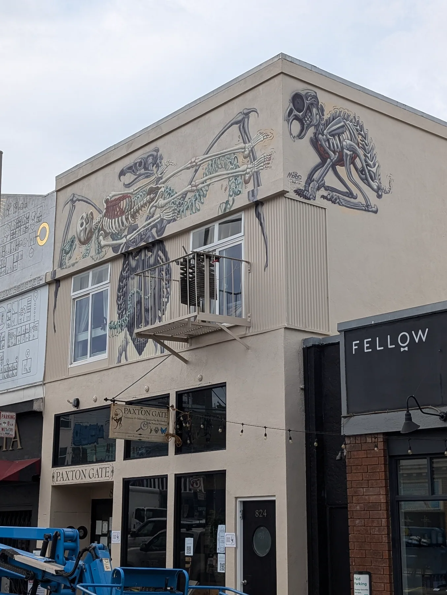

October 2024. The internationally known muralist Nychos painted Paxton Gate’s storefront while five local artists made live work in the window below, one each day.
Event production
Partnerships
Press

The finished mural · 824 Valencia St, San Francisco
1storefront mural by Nychos, 824 Valencia St
5local artists making live work in the window, one each day
1group show afterwards, at Incline Gallery
Nychos shows how live art captures the public’s attention.
What I produced, end to end
The artist line-up and schedule
The two-sided flyer
The press release
Press interviews
The day-of logistics
The week’s work then went on to a group show at Incline Gallery.
Nychos at work on the lift.The palette, set out on the curb.
Detail, above the windows.
The Artist Showcase
Day 1 · Nychos & Zac Amendolia
I designed a poster for each day.
E Dyer focuses on the small details.Zac Amendolia’s window: his handmade Greasy Creeps toys and tattoo flash.Passers-by stopping at the window.Zachary Sweet, painter and muralist, at work with an audience.Nigel Sussman, known for his detailed isometric illustrations, made this piece inspired by Paxton Gate.Michael McConnell paints narrative work with animal-headed figures. In the window, the Paxton Gate staff became his subjects.
In writing
The press release I wrote
Press a page to read it.
Page 1Page 2
Other events I produced
Tyler Thrasher & Terry Munge · The Universe in 100 Colors
With the Exploratorium, November 2025.Signing for a fan, November 8, 2025.The book display in the shop.
Butterflies of the Bay Area book signing, with Liam O’Brien
The flyer I designed, built around Liam O’Brien’s artwork from the book.The social post I designed, using Liam’s art to promote his signing.The signing.
Community nights · reptiles and live music
A poster I designed for the meet up.Meeting a python.Up close with a handler.One of five posters I designed for the Valencia Live! music nights I planned and promoted.Herpetology Happy Hour with Mission Science Workshop.Getting close to the reptiles.
Also: 32nd and 33rd anniversary parties, the Oddities Fair, and Sunday Streets.